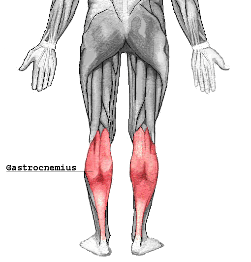

Gemelos
El músculo gastrocnemio, también llamado musculus
gastrocnemius y popularmente gemelos, por estar separado en dos mitades, está situado en la región
posterior de la pierna y es el músculo más superficial de la pantorrilla. Está ubicado sobre el
músculo sóleo y se extiende desde los cóndilos femorales, porción superior, hasta el tendón calcáneo
en su porción inferior. Es voluminoso, oval, aplanado, con dos cabezas: «medial» y «lateral». Se
dice que es un músculo biauricular ya que en su trayecto atraviesa dos articulaciones, la de la
rodilla y la del tobillo.

Ejercicios para Gemelos
Elevaciones de gemelos con barra
- Coloca la barra sobre tu espalda
- Empezar con los pies apoyados en el suelo
- Extienda los talones hacia arriba mientras mantiene las rodillas inmóviles y haga una pausa en la posición contraída.
- Vuelva lentamente a la posición inicial. Repetir.